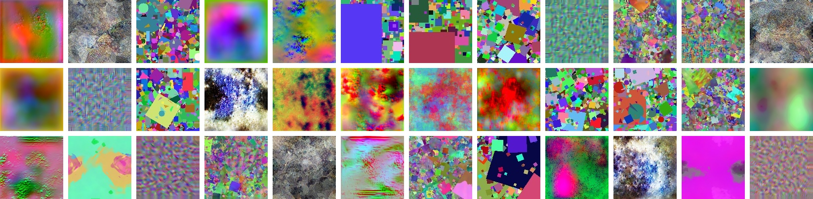
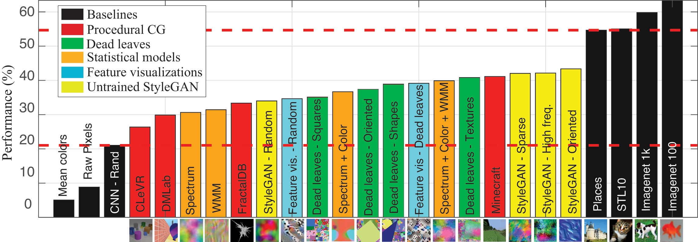
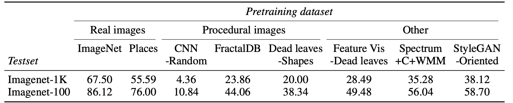

Learning to See by Looking at Noise
|  |
Abstract
Current vision systems are trained on huge datasets, and these datasets come with costs: curation is expensive, they inherit human biases, and there are also concerns over privacy and usage rights. To counter the costs, interest has surged in learning from cheaper data sources, such as unlabeled images. In this paper we go a step further and ask if we can do away with datasets entirely, instead learning from procedural noise processes. We investigate a suite of image generation models that produce images from simple random processes. These are then used as training data for a visual representation learner with a contrastive loss. In particular, we study statistical image models, randomly initialized deep generative models, and procedural graphics models. Our findings show that it is important for the noise to capture certain structural properties of real data but that good performance can be achieved even with processes that are far from realistic. We also find that diversity is a key property to learn good representations.
Game: real or noise?
Datasets
Randomly selected samples for each of the datasets presented in the paper.
Performance
|  |
Top-1 accuracy for the different models proposed and baselines for Imagenet-100. The horizontal axis shows generative models sorted by performance. The two dashed lines represent approximated upper and lower bounds in performance that one can expect from a system trained from samples of a generic generative image model.
|  |
Performance of linear transfer for a ResNet50 pre-trained on different image models using MoCo-v2.
Feature visualizations
bibtex entry
Acknowledgements
MB is supported by the LaCaixa Fellowship, JW is supported by a grant from Intel Corp.